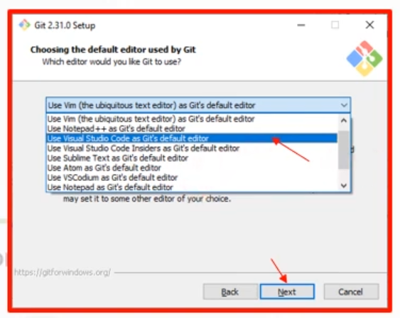
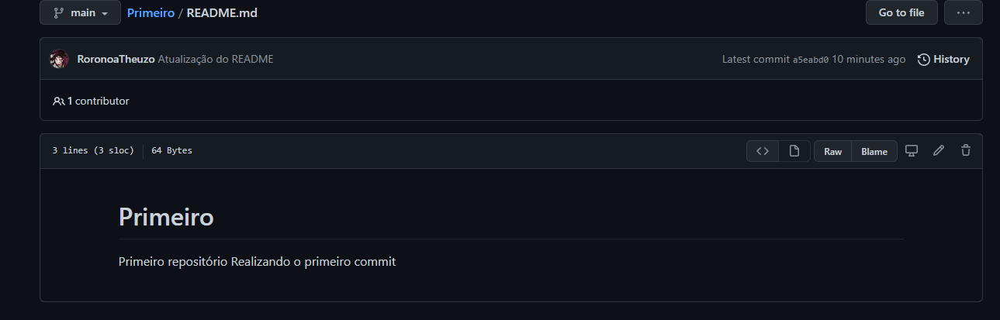
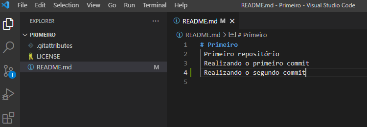
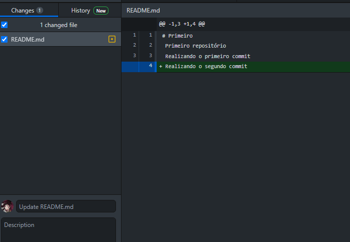
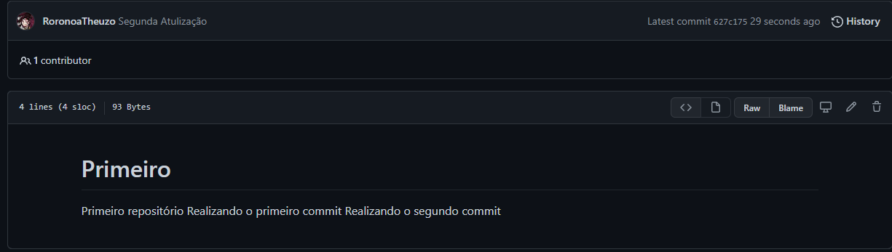

Software de versionamento
/i329956.jpeg)
Tipos de software de controle de versão
- Centralizado
- Distribuído
Centralizado
O software centralizado possui um repositório central em um determinado servidor, com controle de versões, ou seja, as pessoas se conectam nesse servidor e começam a trabalhar no projeto, portanto, ficando dependente do servidor. Exemplo de software é o Subversion.
Distribuído
Já o software distribuído possui um repositório local controlando versões, independente do servidor, ele vai atualizando no repositório central. Exemplo de softwares são Mercurial e Git.
Alguns Softwares

O Git é um software de versionamento que surgiu especialmente para o do Kernel do Linux, ele foi projetado e desenvolvido por Linus Torvalds no ano de 2005. Cada diretório de trabalho do git é um repositório que possui histórico completo e uma habilidade de acompanhamento das revisões do projeto, não dependendo de acesso a rede ou um servidor central.

O Github é uma plataforma que funciona como uma hospoedagem de código fonte e arquivos, onde possuem o controle de versão, surgiu em 2008 e a Microsoft em 2018 o adquiriu por U$ 7,5 bilhões, atualmente, o GitHub hospeda 100 milhões de projetos e possui 56 milhões de usuários.
Observação: Não confunda Git e Github, git é o programa que faz o controle de versionamento e o github é a plataforma de hospedagem.
Preparação do ambiente
Para termos a integração aplicativos e o funcionamento dos mesmos iremos precisar de alguns aplicativos, isso vai facilitar a vida do programador.
Iremos utilizar o Github, Git, Desktopgithub e o VisualStudioCode.
Comandos Git
Existem alguns comandos para linhas de código no Git, você vai ouvir falar bastante nesses comandos. São eles:
Commit torna permanente um conjunto de alterações de determinado repositório.
Push envia alterações para o servidor utilizando o repositório remoto.
Fetch verifica se o seu repositório local está sincronizado com o remoto.
Pull sincroniza o repositório local com o remoto, atulizando as versões.
Você irá utilizar o Git com o VisualStudioCode, é interessante durante a instalação do Git irá marcar a seguinte opção para iniciar com o VisualStudioCode:

Sendo assim, você conseguirá abrir o seu projeto do GitHub através do VisualStudioCode, simplificando a nossa vida.
Após criar um repositório e deixá-lo público com a opção "MIT license", você vai publicar o repositório

Logo após publicar, irá ter a opção "Open in Visual Studio Code", pode clicar e irá abrir o aplicativo, então você irá utilizar os comandos que foram utilizados acima.

Então, também irá ter a opção "Push Origin", você pode estar utilizando também para sincronização de repositórios. Um exemplo de atualização.

Para publicar a atualização, você deve ir ali em "Update README.md", você pode adicionar uma descrição para a atulização ou publicar.

Observação: Não estamos utlizando os comandos Git em linhas de comando, mostrar a integração entre as as ferramentas utlizadas.
Você pode também fazer atualizações no seu repositório pelo site do GitHub, porém, no GitHubDesktop, você irá ter que clicar "Pull Origin", pois, se forem feitas atualizações no site e você utilizar o Visual Studio Code para fazer alguma outra atualização você irá ter que sincronizar utilizando a opção que foi dita anteriormente. Sendo assim, temos a opção de clonagem de repositório, tanto no site, quanto no GitHubDesktop.